i'm yolanda,
I’m always inspired by what others create. I’m learning to create, too.
i'm yolanda!
ECE '27 @ uwaterloo
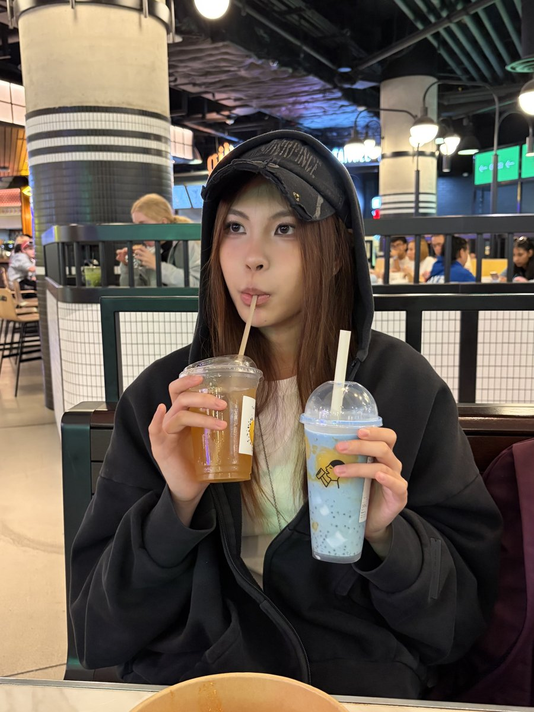
i'm yolanda,
I’m always inspired by what others create. I’m learning to create, too.
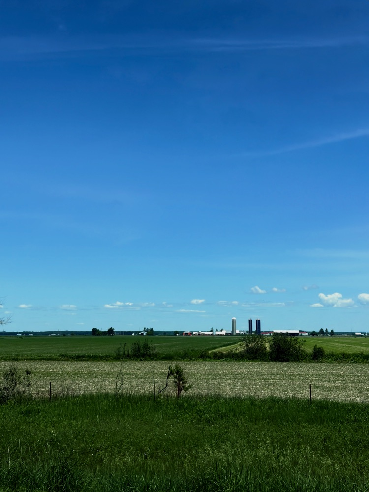
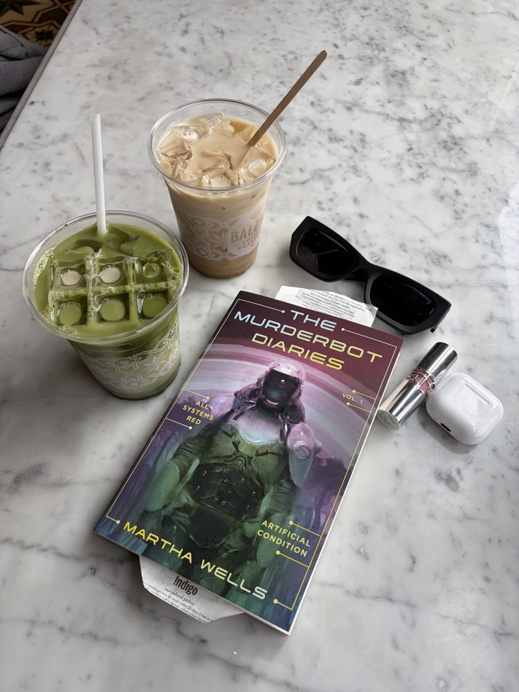

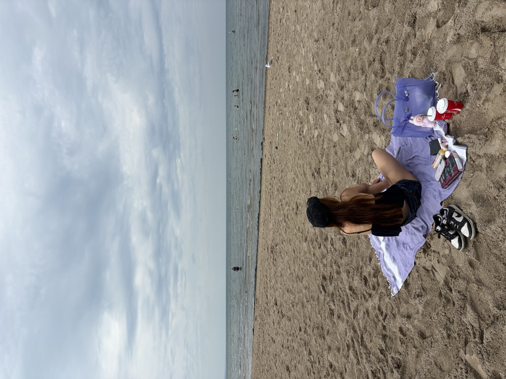
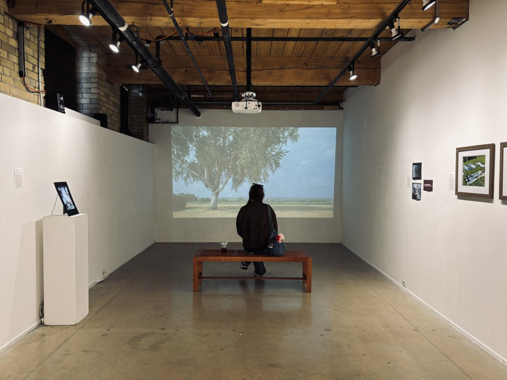
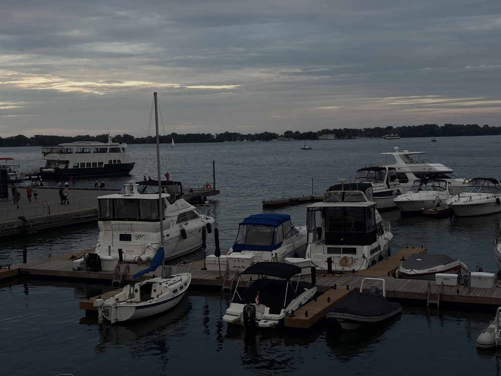
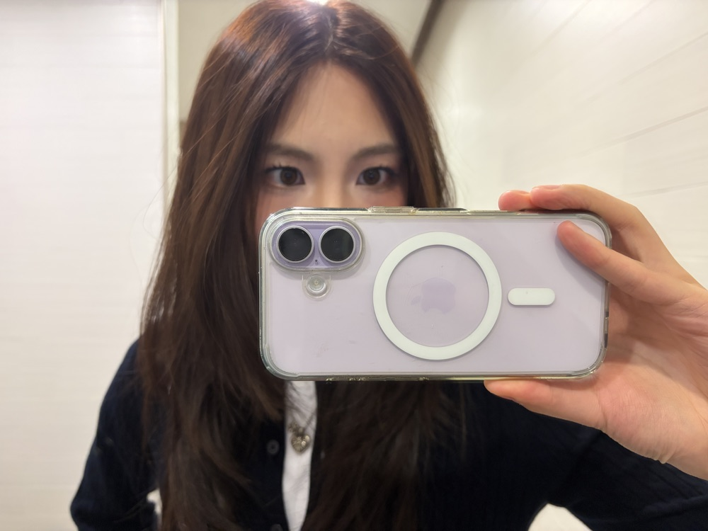
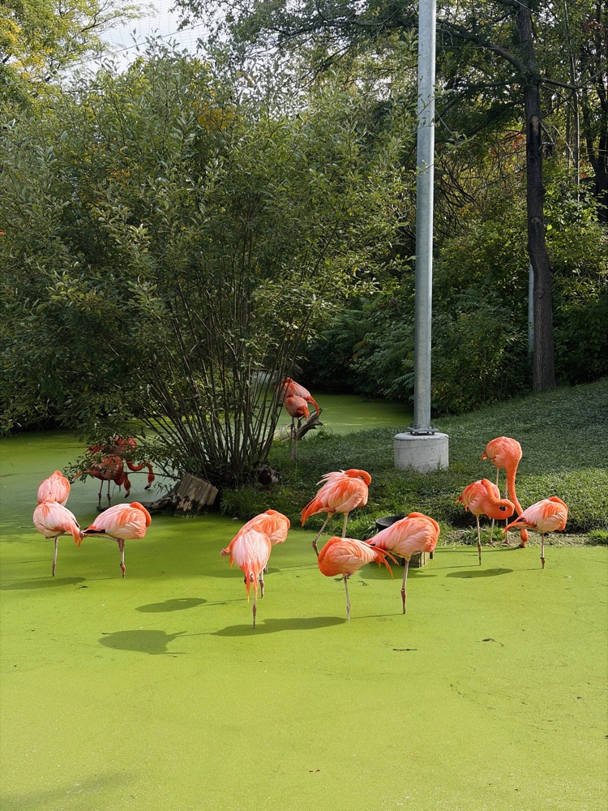
Enter opens an enlarged photo. Escape closes it. Alt plus Left or Right moves its pin along the line. Drag with a mouse, or drag the pin on a touchscreen, to repin.
AI Product Management Intern
Product and data analytics for RBC GAM’s AI agent platform supporting investment research and portfolio engineering.
Undergraduate Research Assistant
How Generative AI Shapes Human Thinking: understanding the impact of AI on consumer psychology
AI Product Management Intern
Establishing product direction for cloud database AI agents and developing internal product dashboards for the cloud database product.
Product Management Intern
Developing knowledge graph requirements and improving onboarding for a cloud database product.
Product & Software Engineering Intern
Designing and developing an integrated CRM and truck-routing SaaS platform.
Electrical Engineering Intern
Working with the Buildings team at an engineering consulting firm.
Electrical Engineering Intern
Working with the Buildings team at an engineering consulting firm.
how my corner of the internet took shape
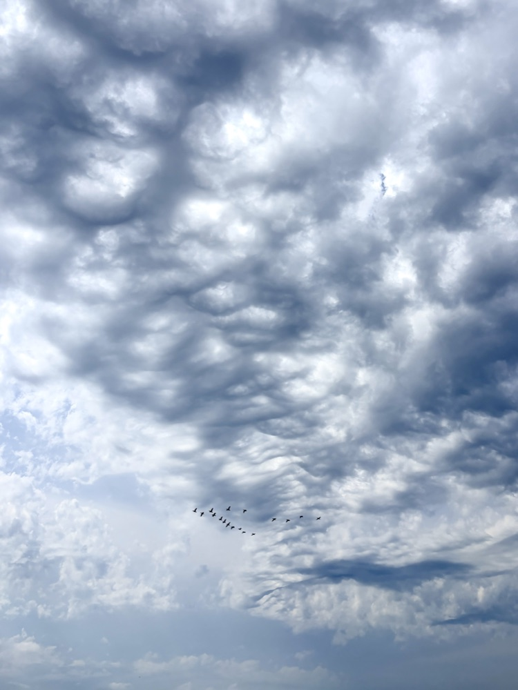
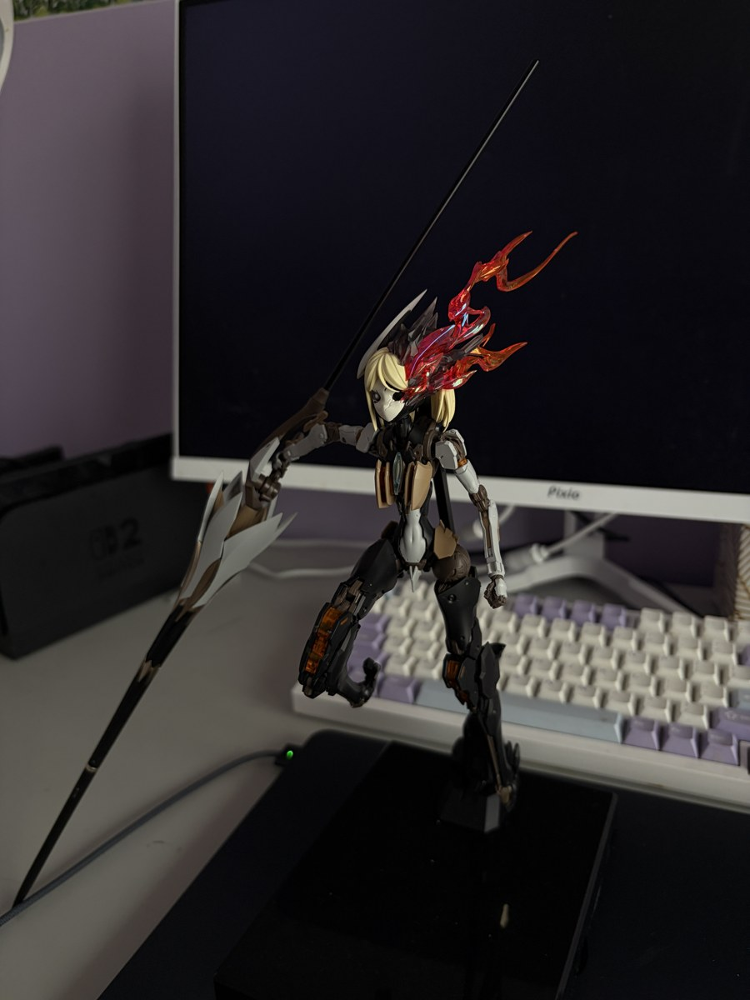
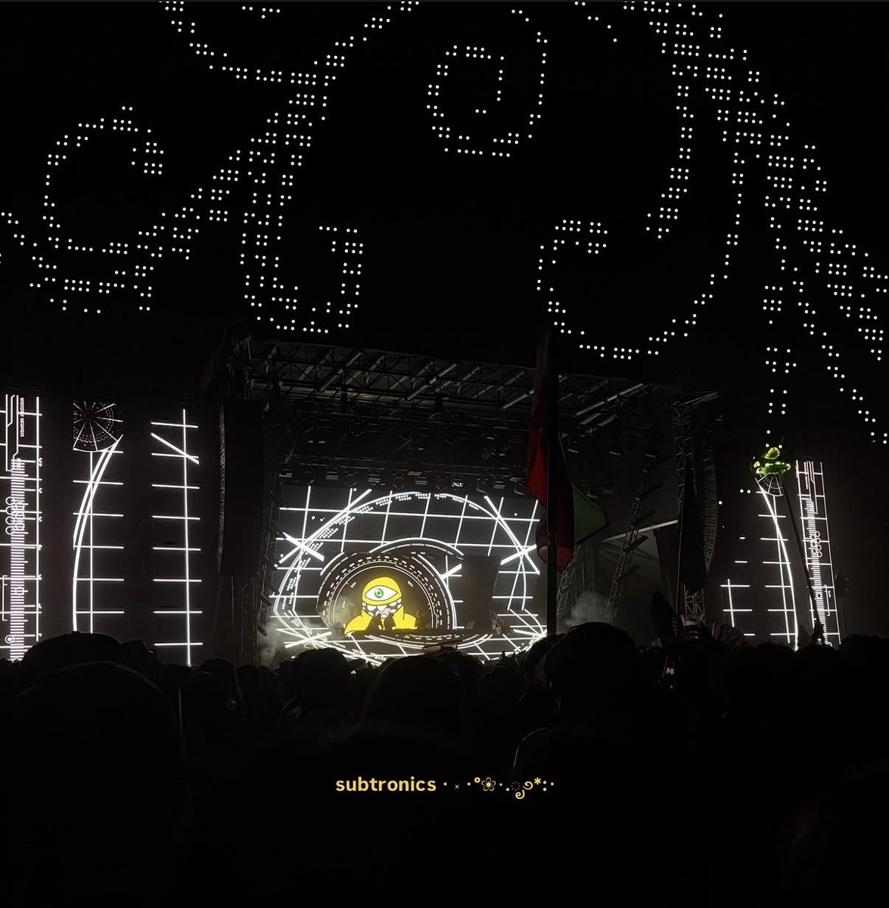